Создание игр в Roblox Studio
IK-анимация
IK и FK - два подхода к созданию анимации
Это занятие продолжает тему предыдущего - в нём нам предстоит познакомиться со вторым подходом в создании анимации, который называется Inversed Kinematics. В анимации существует два подхода к созданию анимаций: Forward Kinematics и Inversed Kinematics.
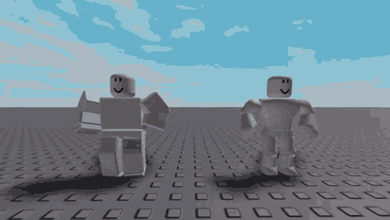Первый подход (Forward Kinematics или сокращённо FK) мы изучили в предыдущем занятии. Он основывается на последовательном изменении каждого сустава по отдельности. Повороты суставов идут от родительских костей к дочерним и настраиваются последовательно, напрямую. Благодаря этому такой подход позволяет добиться самого точного результата, однако занимает намного больше времени при создании более сложных анимаций.
Помимо FK существует второй подход, который называется Inversed Kinematics или IK. В отличие от предыдущего, он позволяет изменять повороты костей автоматически, выставляя промежуточные кости в правильное и органичное положение. В IK кости соединены друг с другом и, перемещая одну из костей, вы автоматически перемещаете и все связанные с ней кости, как в человеческом теле.
Наглядно показать этот принцип можно на примере собственного тела: если потянуть руку за кисть, локоть переместится вслед за ней, самостоятельно найдя правильный угол и положение в пространстве. На этом основана система Inversed Kinematics, благодаря которой можно выстраивать намного более органичные и живые позы персонажа.
Создание персонажа R15
Для этого занятия нужно создать нового персонажа, тело которого будет состоять не из 6, а из 15 частей. В более сложном персонаже присутствуют локти, колени, ступни и кисти, которые будут задействованы в работе с системой IK.
Создание персонажа
Перейдите в раздел Avatar и при помощи плагина Rig Builder создайте любого персонажа в системе R15.
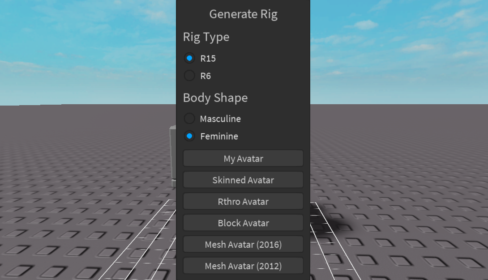Откройте Animation Editor. Как и в предыдущем занятии, сперва необходимо назвать будущий клип анимации. В качестве примера будет разобрана анимация танца. Назовите анимацию dance.
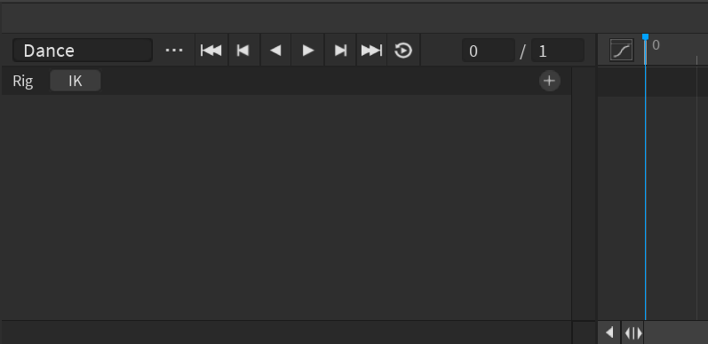Добавьте к анимируемым деталям все части персонажа: нажмите на иконку + и выберите вариант Add All Body.
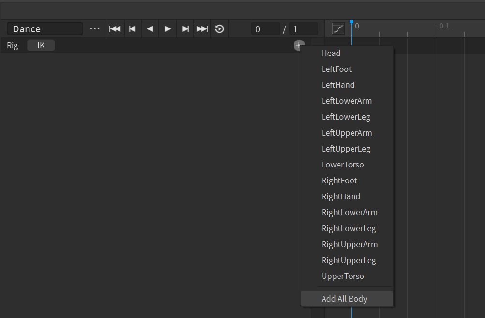После этого добавьте все ключи для всех частей (правый клик на строке под таймлайном - Add Keyframe Here).
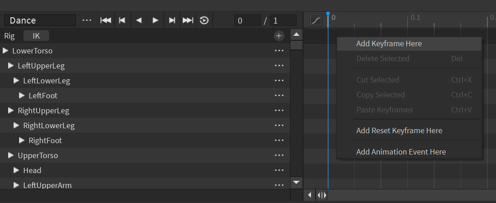Включаем систему IK
Следующим шагом необходимо включить систему IK, для этого нажмите на одноимённую кнопку около имени персонажа:
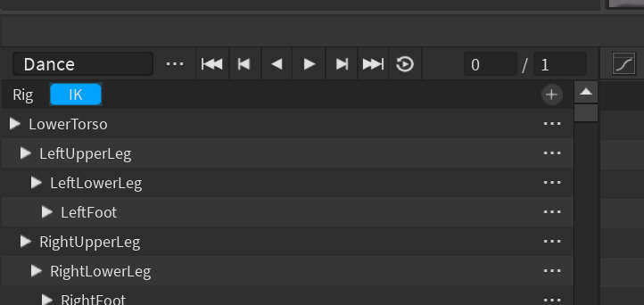После этого откроется дополнительное окно, в котором будет представлена полная иерархия костей персонажа. Нужно нажать кнопку Enable IK. В этой иерархии отображается то, как кости подчинены друг другу, подобно родительско-дочерним отношениям объектов в окне Explorer:
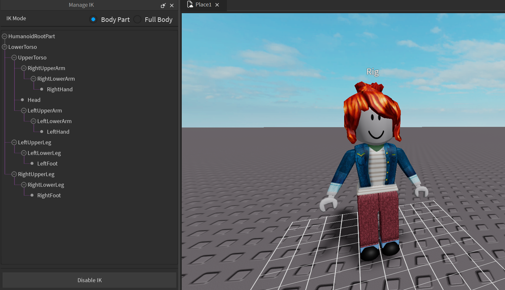Особенность инвертированной кинематики в том, что в отличие от прямой кинематики, чем ниже в иерархии находится кость, тем больше родительских костей она будет перемещать за собой. Поэтому она называется инвертированной или обратной.
Анимация танца
Эта анимация будет длиннее, чем в прошлом занятии. Прежде чем приступать к работе, измените длительность анимационного клипа. Для этого в строке управления анимации замените второе значение с 1 на 2:
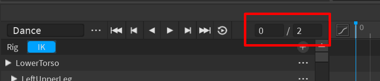Начальная поза персонажа
Поставим персонажа в начальную позу. Для этого мы будем перемещать кисти и стопы персонажа. Выберите одну из кистей персонажа и при помощи инструмента перемещения передвиньте её в желаемое положение.
Локоть переместится самостоятельно. Вы заметите, что движение производится медленнее, чем обычно. Это нормально - такое ограничение с точки зрения разработчиков Roblox облегчает работу со слишком подвижными суставами персонажа.
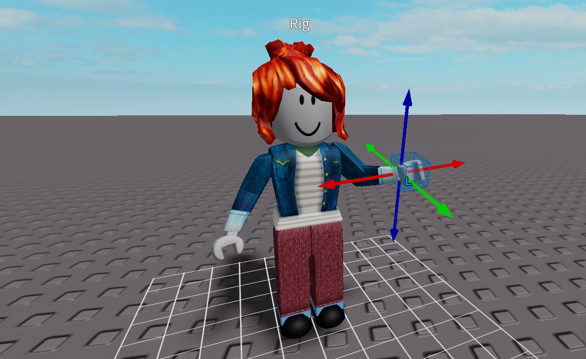После этого переместите вторую руку в любое положение и приступите к перемещению стоп персонажа. Во время перемещения кистей и стоп вы можете столкнуться с плохо управляемыми или недостаточно разворачиваемыми коленями/локтями. Это связано с тем, что у каждого сустава есть ограничение поворотов, не позволяющее им установиться в неправильные положения. Чтобы это обойти, разверните стопу/кисть и продолжите перемещение.
Завершите выставление позы, переместив тазовый сустав вниз - это позволит персонажу присесть. Также, изменяя поворот части UpperTorso, можно наклонить торс персонажа в одну или в другую сторону.
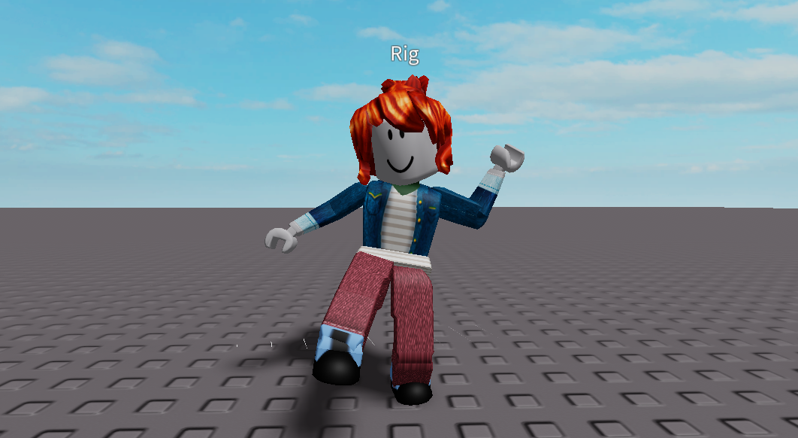Выставляем вторую позу
Перейдите в 15-й кадр (отметка 0.5 на таймлайне) и выставьте персонажа в следующую позу. В ней он будет находиться в приседе на одной из ног. Принцип действий такой же, как и в предыдущем шаге, поэтому подробно разобран не будет.
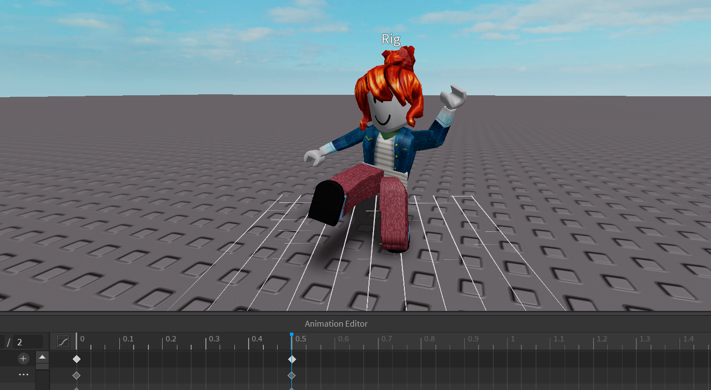Переход в новую позу
Перейдите в 30-й кадр (он обозначен цифрой 1, так как находится на 1 секунде от начала анимации). Поставьте персонажа в нейтральную позу, из которой он будет присаживаться на вторую ногу.
Эта поза не обязательно должна быть абсолютно ровной, при желании, оставьте наклон или небольшой присед персонажа.
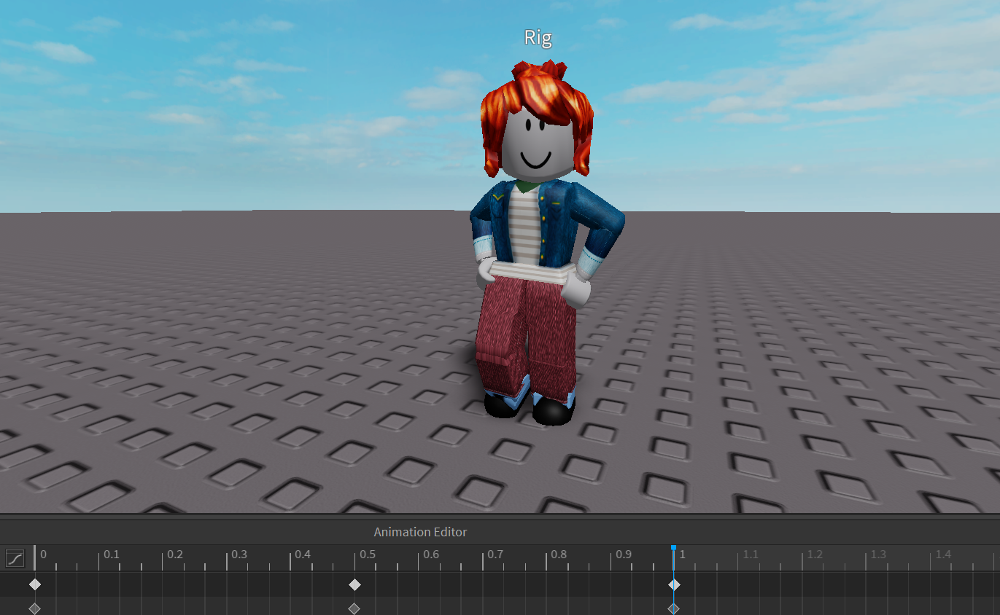Перейдите в 45-ый кадр и сделайте позу для приседа на вторую ногу.
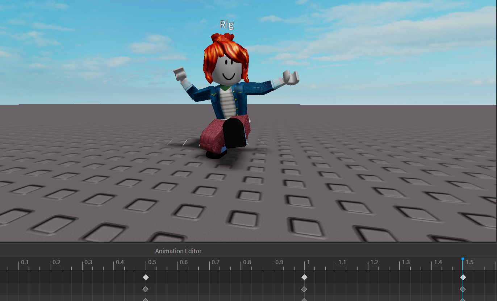Итоговая поза и цикличность анимации
После того, как основной танец готов, перейдите в последний кадр (отметка 2) и поставьте персонажа в ещё одну нейтральную позу - она будет закрывать и открывать танец. Это может быть копия средней позы или новая.
Так как анимация танца после окончания должна воспроизводиться заново, пока не будет прервана, необходимо сделать так, чтобы её окончание и начало не были заметны. Такие анимация называется цикличными.
Для того, чтобы они работали правильно, обязательно нужно скопировать все ключи последнего кадра и вставить их в первый. Таким образом, анимация закончится в той позе, в которой начиналась, и при переходе на новый цикл она будет воспроизводиться бесшовно.
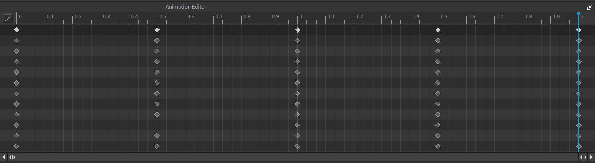Анимация танца готова! Сохраните её, нажав на три точки около имени анимации и выбрав вариант Save.
Анимация удара
Вторая анимация в этом занятии - анимация действия, например, удара. Эта анимация отличается от предыдущей, так как не является цикличной: она начинается в одной позе, а заканчивается в другой. Такой тип анимации характерен для активных действий, единожды вызываемых в различных ситуациях.
Создаём новую анимацию. Стартовая позиция
Создайте новую анимацию, нажав на три точки около имени анимации и выбрав вариант new. Назовите анимацию JumpPunch. Добавьте все суставы к анимированном частям, затем добавьте стартовые ключи в первом кадре.
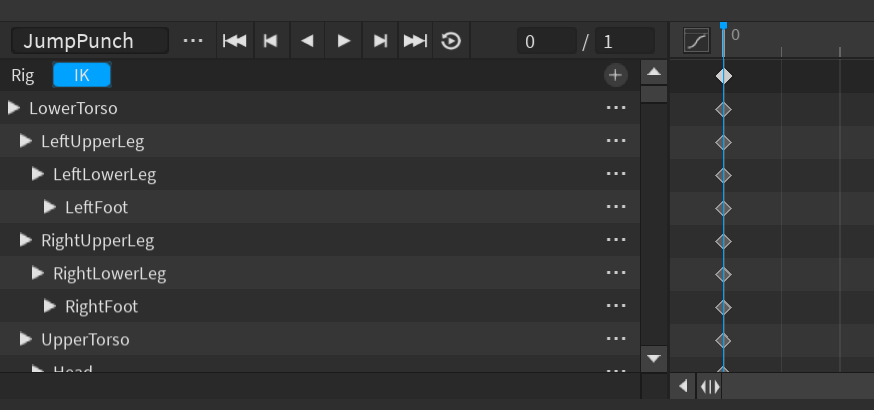Установите персонажа в стартовую позицию: он должен находиться в позе, подготавливающей его и к прыжку, и удару. Нога, которая будет наносить удар, должна находиться сзади, опорная нога - спереди, корпус развёрнут, руки в защитной стойке, голова чуть наклонена вперёд:
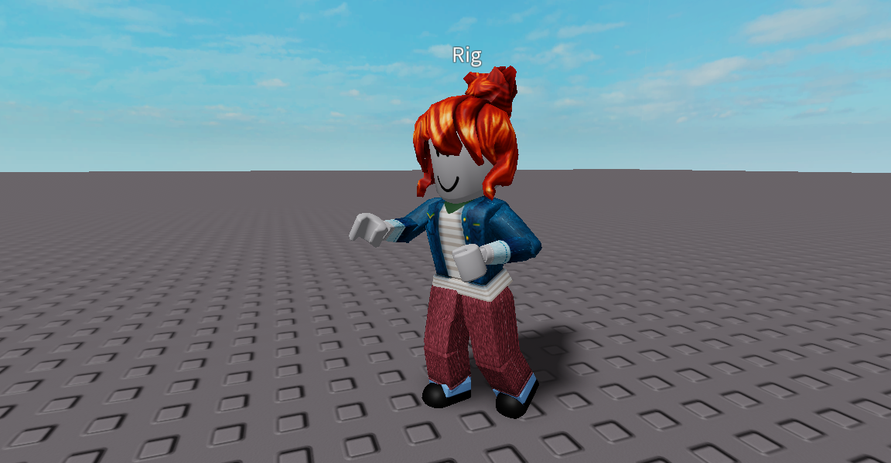Анимация прыжка
Перейдите в кадр 6. В этом кадре персонаж должен немного присесть и подготовиться к прыжку, немного развернувшись корпусом.
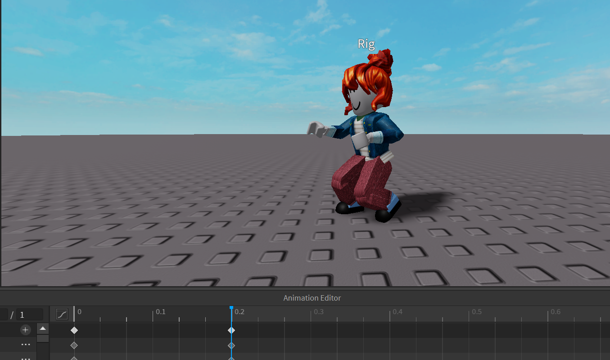Перейдите в кадр 12. В этом кадре персонаж должен подпрыгнуть в воздух и выбросить ударную ногу вперёд. Чтобы это сделать, необходимо сначала переместить тело персонажа вверх, подняв его над землёй. Если попытаться сделать это, перемещая ключевую кость LowerTorso, персонаж просто выпрямится, но не оторвётся от земли.
В окне Manage IK слева найдите переключатель Body Part/Full Body. Это режимы работы с костями персонажа. Переключитесь в режим Full Body, он позволяет перемещать всё тело персонажа, а не отдельную кость.
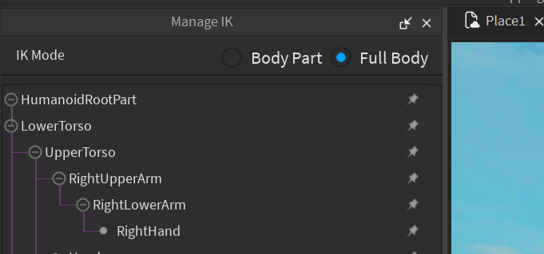Поднимите персонажа над землёй, после чего переключитесь обратно в режим Body Part и закончите позу персонажа.
Ударная нога должна вытянуться вперёд, корпус развернуться в сторону удара, опорная нога - переместиться назад и немного подогнуться под корпус.
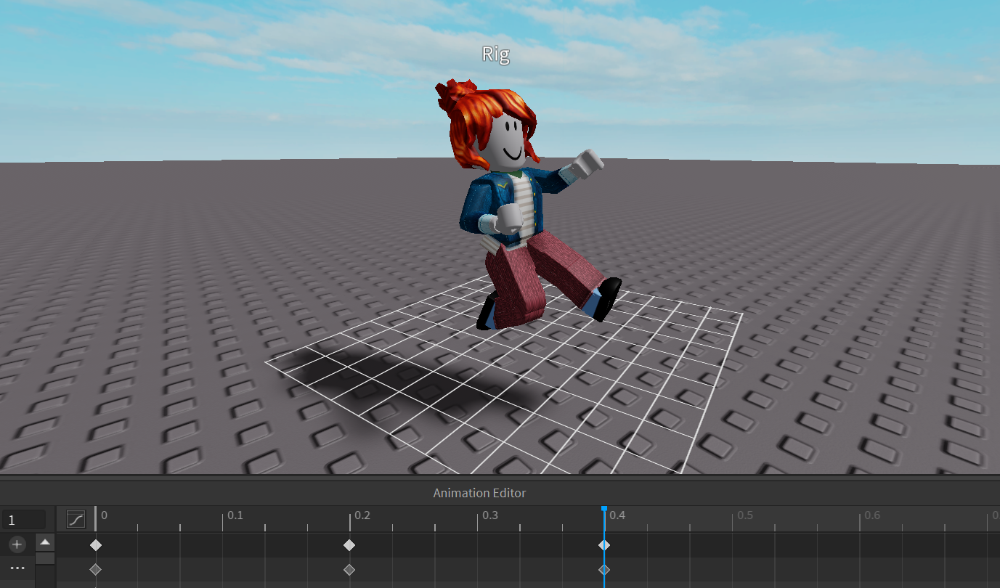Перейдите в 21-й кадр и приземлите персонажа. Поставьте его в финальную позу и воспроизведите анимацию. На этом можно завершить работу с данной анимацией, однако по желанию можно добавить несколько деталей, которые увеличат реалистичность движений.
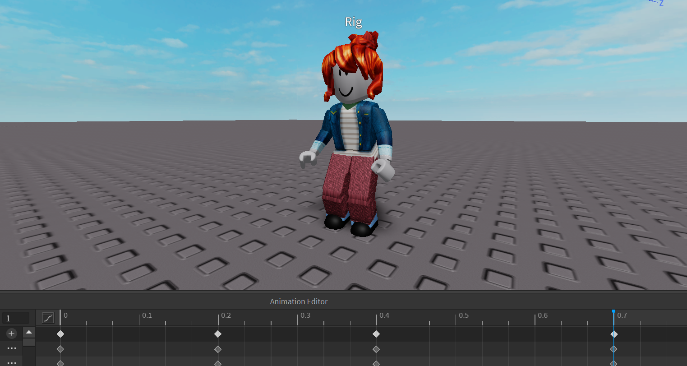Анимация удара готова! Не забудьте её сохранить.
Домашкаа 😁
Нужно самостоятельно сделать ещё одну анимацию персонажа R15, используя полученные на занятии знания. Например, это может быть анимация какого-либо базового движения, эмоция, спортивное упражнение, получение урона и т.д. Не забудьте сохранить свою анимацию и карту :)